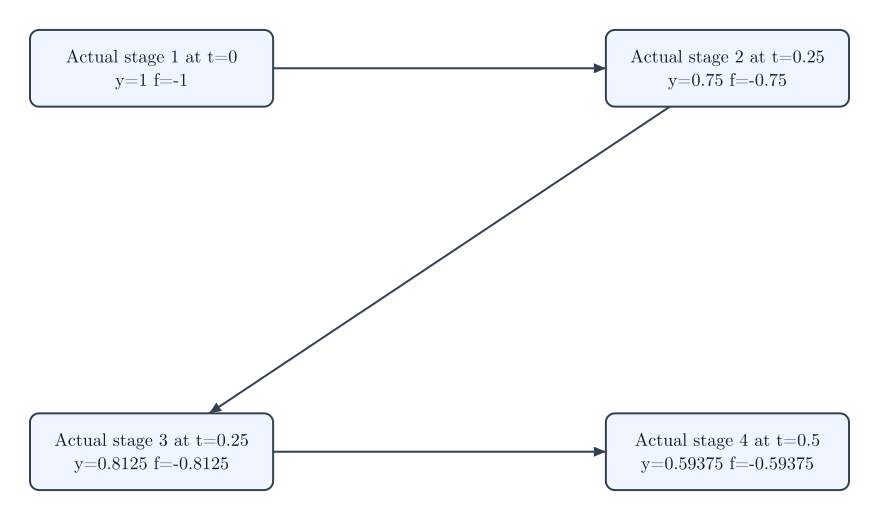
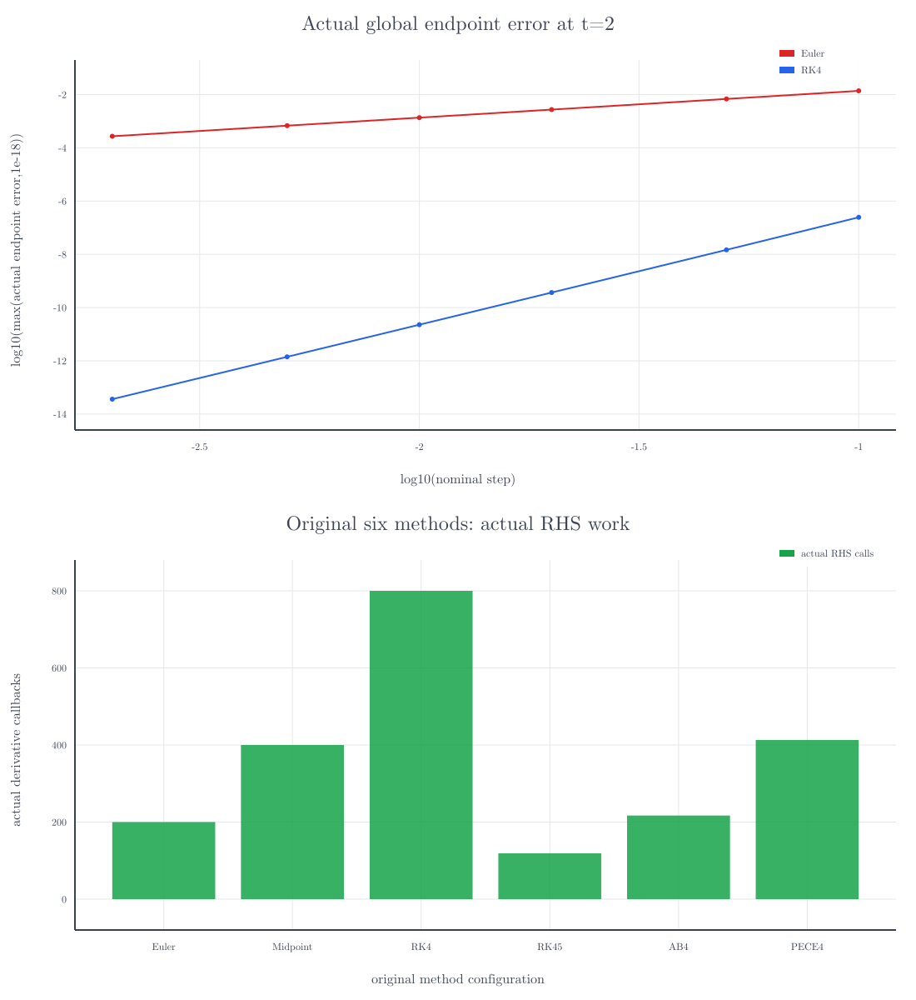
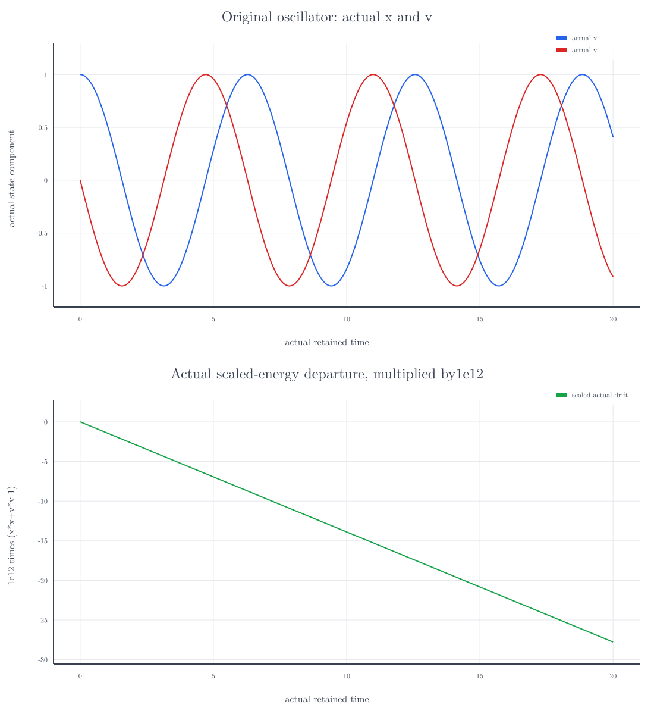
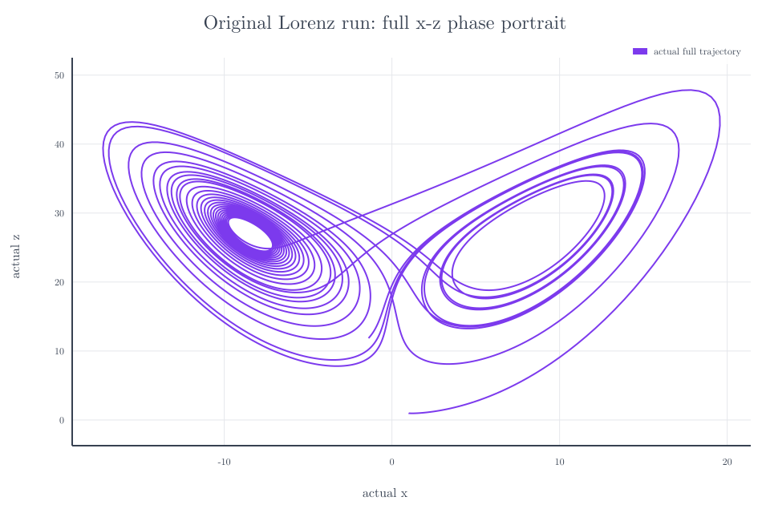

Forward ODE solvers: actual stages, attempts and trajectories
Abstract
Derive the native one-step/adaptive/Adams methods from a tiny live-RHS example, then retain the original six-method decay table and step-size sweep. Actual callback/trial histories expose rejected adaptive steps, while the original harmonic and Lorenz trajectories distinguish finite numerical diagnostics from conservation or long-time accuracy claims.
A finite forward initial-value problem
Solve y'=f(t,y),y(t_0)=y_0 for finite t_1>t_0 and a finite nonempty fixed-dimensional state. Every actual RHS stage must return a finite derivative of the same dimension. Native C++ can supply a live RHS subclass; named builtins also expose exponential decay, logistic growth, harmonic oscillator, van der Pol and Lorenz systems without requiring a callback subclass. This report makes no blanket installation/director claim for all language bindings.
For smooth solutions in a stable fixed-step regime, Euler uses y_{n+1}=y_n+h f(t_n,y_n), with local error O(h²) and accumulated global error O(h). Explicit midpoint first forms k1=f(t,y),k2=f(t+h/2,y+hk1/2), then returns y+hk2, giving second-order global accuracy. Classical RK4 uses
RK4 has local error O(h^5) and fourth-order global accuracy under the stated smoothness/stability assumptions. A final error-versus-step experiment estimates global endpoint error, not local truncation error. None of these explicit methods is universally stable on stiff problems.
A tiny actual RK4 step from a live C++ RHS
For y'−y,y(0)=1 and h.5, actual stage derivatives are−1,−.75,−.8125,−.59375. The proposal is.606770833333..., close to but different from exp(−.5). The following complete editable program defines a genuine RHS subclass and reads its actual callback records; it does not implement another RK4 recurrence in report code.
#include <dm/dm.hpp>
class ExponentialDecay : public dm::ode::RHS {
public:
std::vector<double> evaluate(double, const std::vector<double> &state) override{return {-state[0]};}
};
int main() {
std::filesystem::create_directories("build");
ExponentialDecay rhs;
dm::ode::ODESolver solver({dm::ode::StepMethod::RK4, 4, .5});
auto t = solver.trace(rhs, {1.}, 0., .5);
dm::graphics::Diagram d;
for (std::size_t i = 0; i < t.evaluations.size(); ++i) {
auto &e = t.evaluations[i];
d.node(std::to_string(i), {double(i % 2) * 9, 3. - double(i / 2) * 6},
std::format("Actual stage {} at t={}\ny={} f={}", i + 1, e.time,
e.state[0], e.derivative[0]));
if (i)
d.edge(std::to_string(i - 1), std::to_string(i));
}
std::print("| actual stage | actual time | actual state | actual derivative |\n| ---: | ---: | ---: | " "---: |\n");
for (std::size_t i = 0; i < t.evaluations.size(); ++i) {
auto &e = t.evaluations[i];
std::print("| {} | {} | {} | {} |\n", i + 1, e.time, e.state[0],
e.derivative[0]);
}
std::print("\nActual committed value: {:.15f}. Closed-form reference: {:.15f}. Actual stage calls: " "{}.\n",
t.solution.y.back()[0], std::exp(-.5),
t.solution.function_evaluations);
d.save_svg("build/ode_tiny.svg");
}| actual stage | actual time | actual state | actual derivative |
|---|---|---|---|
| 1 | 0 | 1 | -1 |
| 2 | 0.25 | 0.75 | -0.75 |
| 3 | 0.25 | 0.8125 | -0.8125 |
| 4 | 0.5 | 0.59375 | -0.59375 |
Actual committed value: 0.606770833333333. Closed-form reference: 0.606530659712633. Actual stage calls: 4.

Adaptive Dormand–Prince and Adams work
RK45 computes fifth- and embedded fourth-order proposals with seven actual RHS evaluations per trial. Although the tableau permits FSAL reuse, this implementation does not reuse the final stage. Its actual scaled RMS error is
Accept only E≤1. The next trial step is multiplied by clamp(.9 E^(−1/5),.2,5), with growth5 when E=0, then bounded by max_step and remaining interval. Rejected trials still cost seven callbacks. Unsafe normalization arithmetic uses a recorded wider route; a local embedded criterion does not certify global error. The old unconditional acceptance of tiny steps with E>1 has been removed.
Adams-Bashforth uses previously accepted derivatives. At order4,
The Adams-Moulton option performs one PECE correction,
Orders2through4 use their corresponding coefficients; the original order control is clamped to that range. RK4 supplies startup history. Constant-grid formulas are not applied blindly to a shortened final step: that tail now uses RK4. The method is not a full Newton-solved implicit integrator or a general stiff solver.
Retain all original decay comparisons
The native comparison helper preserves y'−y,y(0)=1,t∈[0,2], Euler/midpoint/RK4/AB4/PECE4 at nominal h.01, and RK45 initial h=.1 with absolute/relative tolerances1e−8. A second native helper preserves the original step sweep. Each row retains actual accepted steps and callbacks, so endpoint-tail handling, startup costs and rejection costs remain visible rather than hard-coded to old counts.
The extra coarse-initial-step adaptive control is separate from the original comparison: it deliberately starts at h=2 with tolerances1e−12, exposing actual rejected trials. Its count comes from actual trial records.
#include <dm/dm.hpp>
int main() {
std::filesystem::create_directories("build");
auto comparison = dm::ode::ode_decay_comparison();
auto sweep = dm::ode::ode_decay_step_study();
std::vector<std::string> names;
std::vector<double> cost;
std::print("| original method | actual final y | closed-form absolute error | actual accepted steps | " "actual callbacks | actual final time |\n| --- | ---: | ---: | ---: | ---: | ---: |\n");
for (auto &r : comparison) {
names.push_back(r.name);
cost.push_back(r.solution.function_evaluations);
std::print("| {} | {:.15f} | {:.8e} | {} | {} | {} |\n", r.name,
r.solution.y.back()[0], r.absolute_error,
r.solution.steps_taken, r.solution.function_evaluations,
r.solution.t.back());
}
std::vector<double> x, euler, rk4;
std::print("\n| original nominal step | actual Euler endpoint error | actual RK4 endpoint error | " "actual Euler steps | actual RK4 steps |\n| ---: | ---: | ---: | ---: | ---: |\n");
for (auto &r : sweep) {
x.push_back(std::log10(r.step));
euler.push_back(std::log10(std::max(r.euler_error, 1e-18)));
rk4.push_back(std::log10(std::max(r.rk4_error, 1e-18)));
std::print("| {} | {:.8e} | {:.8e} | {} | {} |\n", r.step,
r.euler_error, r.rk4_error, r.euler_steps, r.rk4_steps);
}
auto adaptive =
dm::ode::ODESolver({dm::ode::StepMethod::RK45, 4, 2., 1e-12, 1e-12, 0}).trace_builtin("exponential_decay", {1.}, {1.}, 0, 2);
std::print("\nSeparate coarse adaptive control: {} actual trials, {} accepted, {} rejected, {} actual " "callbacks.\n",
adaptive.attempts.size(), adaptive.solution.steps_taken,
adaptive.attempts.size() - adaptive.solution.steps_taken,
adaptive.solution.function_evaluations);
auto errors = dm::graphics::RPlot::create();
errors.lines(x, euler, "Euler", dm::graphics::RGBA{220, 38, 38, 255}).points(x, euler, dm::graphics::RGBA{220, 38, 38, 255}, 3.).lines(x, rk4, "RK4", dm::graphics::RGBA{37, 99, 235, 255}).points(x, rk4, dm::graphics::RGBA{37, 99, 235, 255}, 3.);
errors.title("Actual global endpoint error at t=2").x_label(
"log10(nominal step)").y_label("log10(max(actual endpoint error,1e-18))");
auto calls = dm::graphics::RPlot::barplot(cost, names, "actual RHS calls");
calls.title("Original six methods: actual RHS work").x_label(
"original method configuration").y_label("actual derivative callbacks");
auto layout = dm::graphics::RLayout::create(2, 1);
layout.size(1100, 1200).add(errors).add(calls).fit_panels().save_svg(
"build/ode_decay.svg");
}| original method | actual final y | closed-form absolute error | actual accepted steps | actual callbacks | actual final time |
|---|---|---|---|---|---|
| Euler | 0.133979674857962 | 1.35560838e-03 | 200 | 200 | 2 |
| Midpoint | 0.135339828458196 | 4.54522158e-06 | 200 | 400 | 2 |
| RK4 | 0.135335283259357 | 2.27447228e-11 | 200 | 800 | 2 |
| RK45 | 0.135335285500595 | 2.26398261e-09 | 17 | 119 | 2 |
| AB4 | 0.135335284176279 | 9.39665873e-10 | 200 | 217 | 2 |
| PECE4 | 0.135335283162713 | 7.38998585e-11 | 200 | 413 | 2 |
| original nominal step | actual Euler endpoint error | actual RK4 endpoint error | actual Euler steps | actual RK4 steps |
|---|---|---|---|---|
| 0.1 | 1.37586286e-02 | 2.45185178e-07 | 20 | 20 |
| 0.05 | 6.82312667e-03 | 1.46975916e-08 | 40 | 40 |
| 0.02 | 2.71572734e-03 | 3.66960989e-10 | 100 | 100 |
| 0.01 | 1.35560838e-03 | 2.27447228e-11 | 200 | 200 |
| 0.005 | 6.77240311e-04 | 1.41281431e-12 | 401 | 401 |
| 0.002 | 2.70760790e-04 | 3.63320485e-14 | 1000 | 1000 |
Separate coarse adaptive control: 107 actual trials, 104 accepted, 3 rejected, 749 actual callbacks.

Original harmonic oscillator and scaled energy drift
For omega1, x'v,v'=−x with initial[1,0], the exact solution is x=cos(t),v=−sin(t). The original RK4 h.01 interval[0,20] is retained. The scaled energy x²+v² equals1 in exact arithmetic. Classical RK4 is not symplectic and does not enforce this invariant; the native study reports actual sampled drift and state error instead of claiming energy preservation.
The lower panel multiplies the raw scaled-energy departure by10^12 for readable ticks. Raw departures remain in the computed table, and the scaling is explicitly a display transformation. This finite nonstiff example does not establish long-time stability or universal conservation.
#include <dm/dm.hpp>
int main() {
std::filesystem::create_directories("build");
auto s = dm::ode::ode_harmonic_study();
auto states = dm::graphics::RPlot::create();
states.lines(s.solution.t, s.position, "actual x",
dm::graphics::RGBA{37, 99, 235, 255}).lines(
s.solution.t, s.velocity, "actual v",
dm::graphics::RGBA{220, 38, 38, 255});
states.title("Original oscillator: actual x and v").x_label(
"actual retained time").y_label("actual state component").y_limits(
-1.2, 1.3);
std::vector<double> scaled;
for (double value : s.energy_drift)
scaled.push_back(value * 1e12);
auto energy = dm::graphics::RPlot::create();
energy.lines(s.solution.t, scaled, "scaled actual drift",
dm::graphics::RGBA{22, 163, 74, 255});
energy.title("Actual scaled-energy departure, multiplied by1e12").x_label(
"actual retained time").y_label("1e12 times (x*x+v*v-1)");
auto layout = dm::graphics::RLayout::create(2, 1);
layout.size(1100, 1200).add(states).add(energy).fit_panels().save_svg(
"build/ode_oscillator.svg");
std::print("| actual diagnostic | computed value |\n| --- | ---: |\n| final x | {:.15f} |\n| cos(20) " "reference | {:.15f} |\n| final v | {:.15f} |\n| -sin(20) reference | {:.15f} |\n| actual " "final scaled energy | {:.15f} |\n| maximum absolute raw sampled energy drift | {:.8e} |\n| " "maximum sampled state error norm | {:.8e} |\n| actual accepted steps | {} |\n| actual " "callbacks | {} |\n",
s.position.back(), std::cos(20.), s.velocity.back(),
-std::sin(20.), s.final_energy, s.max_energy_drift,
s.max_state_error, s.solution.steps_taken,
s.solution.function_evaluations);
}| actual diagnostic | computed value |
|---|---|
| final x | 0.408082063329543 |
| cos(20) reference | 0.408082061813392 |
| final v | -0.912945250034702 |
| -sin(20) reference | -0.912945250727628 |
| actual final scaled energy | 0.999999999972222 |
| maximum absolute raw sampled energy drift | 2.77782242e-11 |
| maximum sampled state error norm | 1.66699077e-09 |
| actual accepted steps | 2000 |
| actual callbacks | 8000 |

Original Lorenz portrait, complete forward contracts
The original Lorenz system uses sigma10,rho28,beta8/3, initial[1,1,1], RK4 h=.005 over[0,25]:
All returned samples, including the initial transient, remain in the x–z portrait. This finite numerical path illustrates the system’s geometry; a familiar portrait does not certify pointwise long-time accuracy or prove an attractor. Chaotic sensitivity and fixed-step error remain separate from successful finite integration.
Complete controls, finite nonempty initial state, finite forward span and builtin dimensions/parameters are checked before callbacks. Every stage and returned derivative must remain finite and fixed-dimensional. Nonadvancing representable time throws. The old absolute1e−14 endpoint skip is removed, so even a smaller positive interval is integrated; successful trajectories include the exact requested terminal time. This can change the final tail and reported counts from the old report. Callback effects before a later failure cannot be rolled back, and no partial solution/trace is returned.
Default execution limits are1000000 actual attempts,7000000 callbacks and1000000 retained solution time/state scalars. Explicit limits overloads allow zero to disable each policy. Trace admission counts original options/times8+initial dimensionD, accepted samples1+D, callbacks2+2D and trials1+2D. The default trace cap is1000000 logical units, zero disabling; record metadata, capacities and allocator cost are excluded. Ordinary work follows actual callbacks/state algebra and retains every accepted trajectory state; trace storage additionally follows every actual callback/trial. No shared mutable solver state or retained caller references are introduced.
#include <dm/dm.hpp>
int main() {
std::filesystem::create_directories("build");
auto s = dm::ode::ode_lorenz_study();
auto p = dm::graphics::RPlot::create();
p.lines(s.x, s.z, "actual full trajectory",
dm::graphics::RGBA{124, 58, 237, 255});
p.title("Original Lorenz run: full x-z phase portrait").x_label("actual x").y_label("actual z").save_svg("build/ode_lorenz.svg");
std::print("| actual original Lorenz quantity | computed value |\n| --- | --- |\n| accepted steps | {} " "|\n| derivative callbacks | {} |\n| first retained time | {} |\n| last retained time | {} " "|\n| final actual state | `{}` |\n",
s.solution.steps_taken, s.solution.function_evaluations,
s.solution.t.front(), s.solution.t.back(), s.solution.y.back());
auto tiny =
dm::ode::ODESolver().solve_builtin("exponential_decay", {1.}, {1.}, 0,
1e-16);
std::print("\nPositive tiny-interval control: {} actual retained samples, actual final time {:.17e}, " "actual callbacks {}.\n",
tiny.size(), tiny.t.back(), tiny.function_evaluations);
}| actual original Lorenz quantity | computed value |
|---|---|
| accepted steps | 5001 |
| derivative callbacks | 20004 |
| first retained time | 0 |
| last retained time | 25 |
| final actual state | [-1.394339393065275, -2.4733603723385458, 11.86062694742794] |
Positive tiny-interval control: 2 actual retained samples, actual final time 9.99999999999999979e-17, actual callbacks 4.

Verification
This ten-report batch passes 50 CTest cases, 25 directly instrumented ASan/UBSan
cases, 174 compiled and executed public examples, 707/707 scoped documentation
definitions and ten representative clangd hovers. Independent Python checks
verify 5662 records with 27916 checks: optimal prefix-code costs, train-only
Titanic category counts and held-out confusion, and all 5001 actual original
Lorenz RK4 steps. Frozen valid-input comparisons cover all ten producers, with
intentional guard, ownership, arithmetic and endpoint corrections stated
separately. Twelve checkout headers and twelve byte-identical installed
development headers compile independently; an installed-header native consumer
links and runs. All 40 complete programs execute, and 40 native figures have
been visually reviewed. HTML/Markdown exports preserve computed results and
image bytes. These are scoped native checks. Receipts:
build/mepml-conversion/batch-264-273/.